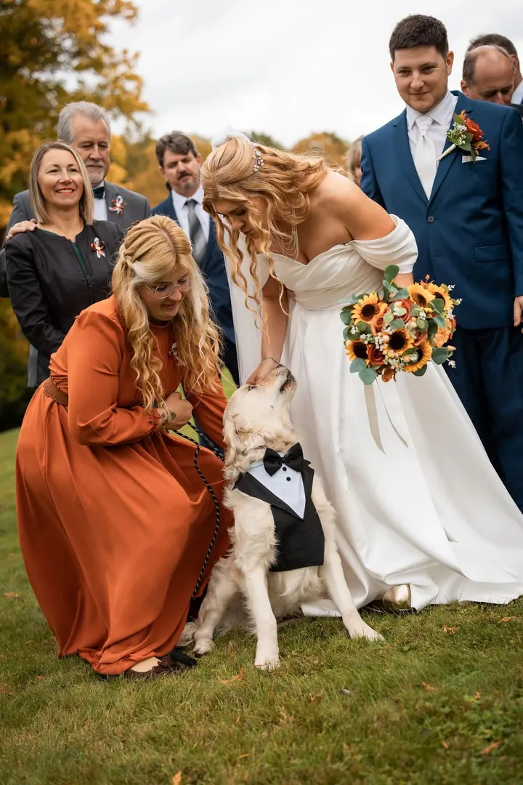
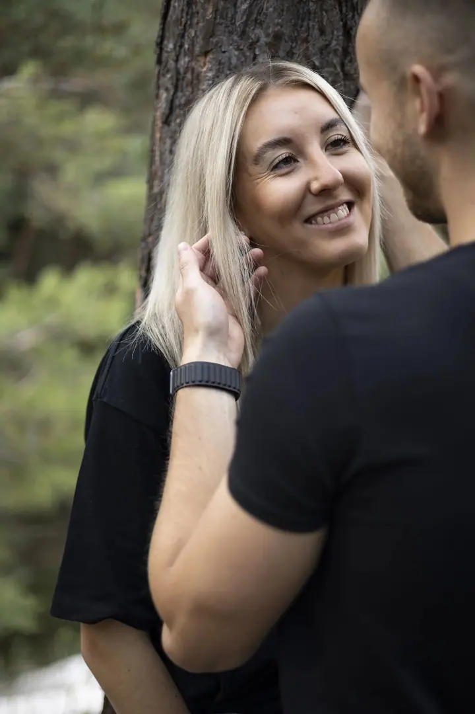
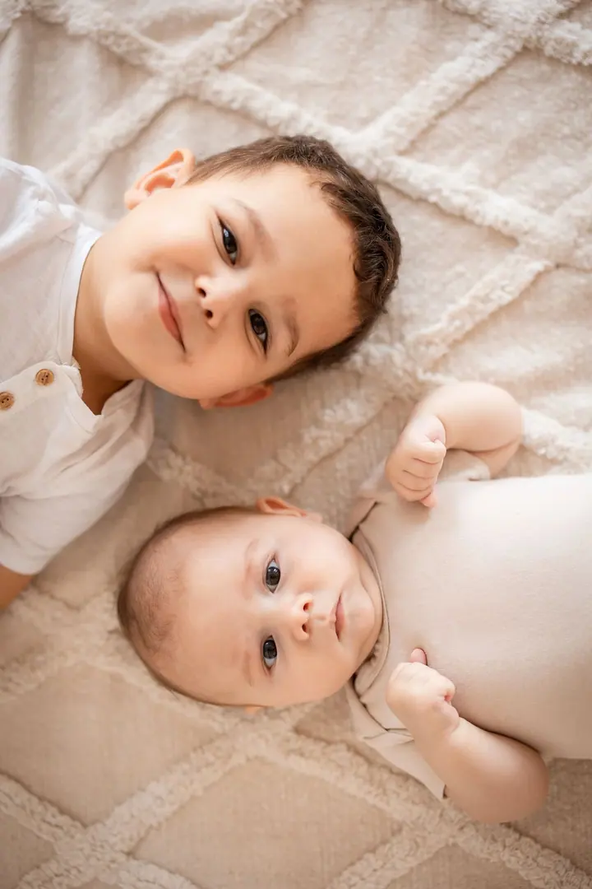
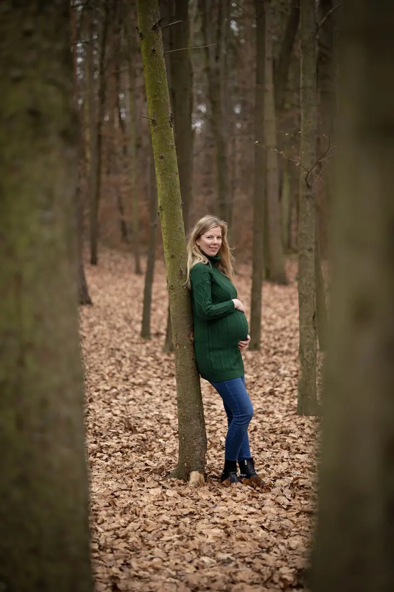

Svatební focení
Svatba bývá většinou jediná v životě, a tak stojí za to mít z ní fotky, ke kterým se budete vracet třeba ve fotoknize. Fotím v uvolněné atmosféře, abyste neměli pocit, že musíte pózovat.

Jmenuji se Jirka Čermín a jsem fotograf z Plzně. Fotím svatby, páry a zamilované fotky i rodiny s dětmi. Focení je pro mě hlavně zábava a chci, aby bylo zábavou i pro vás.
Rezervovat termínFocení se věnuji od roku 2006, kdy jsem začínal s produktovou fotografií. Poslední roky se mu věnuji naplno. Fotím hlavně svatby, páry, portréty a děti, a když potřebujete business fotku do životopisu nebo na web, zvládnu i tu.


Při focení u mě nečekejte křečovité pózování ani umělé úsměvy. Když se neznáme, nejdřív se trochu rozehřejeme a oťukáme. Na svatbě při společných fotkách lidi zorganizuji, u portrétů se naopak snažím, abyste byli v klidu a v pohodě, jako bych tam ani nebyl.
Pocházím z Plzně, ale svatbu vám rád nafotím kdekoli po domluvě. Rodiny a děti fotím venku i v ateliéru House of Art. Největší radost mám, když se vám fotky opravdu líbí a pověsíte si je doma na zeď.
Co fotím
Svatba bývá většinou jediná v životě, a tak stojí za to mít z ní fotky, ke kterým se budete vracet třeba ve fotoknize. Fotím v uvolněné atmosféře, abyste neměli pocit, že musíte pózovat.
Udělejte si hezké odpoledne a odneste si spoustu fotek na zeď v obýváku. Vánoční, při západu slunce, v levanduli, ve slunečnici, nebo jen tak.
Fotka vnoučat bývá pro prarodiče tím nejlepším dárkem. Fotím venku i v ateliéru House of Art, kde se dá domluvit i narozeninová výzdoba.
Párové a zamilované fotky venku v přírodě, bez strojených úsměvů. Stačí si užít společný čas, o fotky se postarám já.
Postup
Před focením se potkáme osobně nebo online. Projdeme si vaši představu, místo a styl focení, u svatby i přesnější harmonogram.
U svatby doporučuji předem společně projít místa pro portréty. U rodinného focení se domluvíme, jestli půjdeme ven, nebo do ateliéru.
Potkáme se v domluvený čas a fotíme podle plánu. Hlavní je, abyste si to užili, takže když se něco posune, nic se neděje.
Svatební fotky předávám v dárkovém balení s 20 tištěnými fotografiemi a webovou galerií. Z rodinného focení vám náhledy pošlu do pár dní a po výběru fotky dodám zhruba do týdne.
Otázky
Mini za 8 900 Kč (3 hodiny, asi 100 fotek), Standard za 16 900 Kč (6 hodin, asi 250 fotek) a Maxi za 22 900 Kč (celý den, max. 10 hodin, asi 400 fotek). Všechny fotky jsou základně upravené, portréty s retuší.
Focení v ateliéru trvá 45 minut a stojí 3 100 Kč, hodina venku stojí 2 500 Kč. V ceně je 10 upravených fotek, každá další vybraná stojí 150 Kč.
Svatební fotky nejpozději do měsíce, obvykle do 14 dní. Z rodinného a dětského focení obvykle do týdne od vašeho výběru.
Ano. Pocházím z Plzně, ale svatbu vám rád nafotím kdekoli po domluvě.
